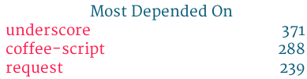

孟祥宇 weibo.com/mengxy (@蒙懵猛孟)
雪球(xueqiu.com)是全球化的投资交流平台，给投资者提供跨市场、跨品种的数据查询、新闻订阅和互动交流服务，目前已覆盖A股、港股、美股市场。
一个逐步完善的 Web Application，浏览器端使用了大量的Backbone.js。
让 Web 应用的速度更快，用起来更方便，看起来更舒服
HTML，CSS，JavaScript
接收浏览器的页面请求，渲染对应的页面 HTML ，返回给浏览器
从后端 API 获取页面需要的数据
一个简单的集成测试部署环境
《使用 express 构建 Web 应用》
http://www.slideshare.net/mengxy/build-web-application-by-express
使用 node 的 http client 请求后端的API
When your app first loads, it's common to have a set of initial models that you know you're going to need, in order to render the page. Instead of firing an extra AJAX request to fetch them, a nicer pattern is to have their data already bootstrapped into the page. http://documentcloud.github.com/backbone/#FAQ-bootstrap
应用广泛 
Request("url1", function(error, data1) {
Request("url2", function(error, data2) {
Request("url3", function(error, data3) {
res.render("tpl", {
"data1": data1,
"data2": data2,
"data3": data3
});
});
});
});
Latency = Request_1 + Request_2 + ... + Request_n;
LinkedIn Engineering
Latency = Request_1 + Request_2 + ... + Request_n;
Latency = Max(Request_1, Request_2, ... , Request_n);
https://github.com/JacksonTian/eventproxy
var proxy = new EventProxy();
var render = function(data1, data2, data3) {
res.render(tml, {"data1": data1, "data2": data2, "data3": data3});
};
proxy.assign("req1", "req2", "req3", render);
Request("url1", function(error, data) {
proxy.trigger("req1", data)}
);
Request("url2", function(error, data) {
proxy.trigger("req2", data)}
);
Request("url3", function(error, data) {
proxy.trigger("req3", data)}
);
http://lorenwest.github.com/node-config/
为不同的环境设置不同的配置文件，支持js，json和haml。
我们用它管理站点信息，域名，API接口，文件目录，静态文件压缩选项。。。

http://progit.org/book/ch7-2.html#keyword_expansion
*.css ident
*.js ident
/*SNBVERSION:$Id$*/
// After git checked out
/*SNBVERSION:$Id: 917aa04eb6fcb1e64cc0148dd7768c1930ecf59a $*/